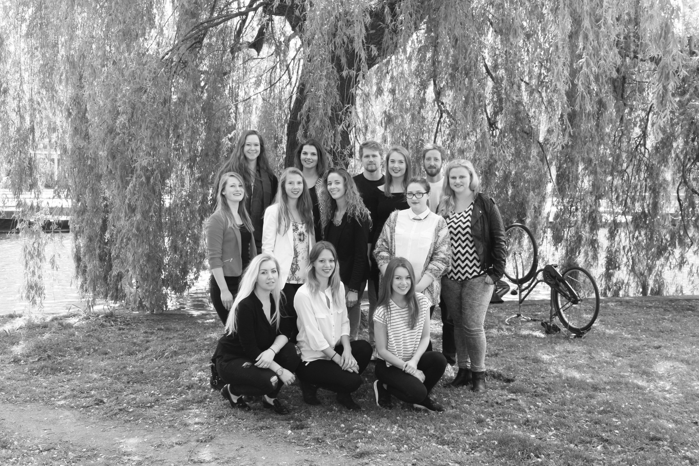

24/7
Food Edition

International Student Guide Amsterdam 2015-2016
About Us
| Editors | Producers | Designers |
| Alina Bojescu | Tessa van Dinteren | Anouk van Driessen |
| Anouk Haaijen | Rosalie Klick | Elvira de Goede |
| Jacky Hitzert | May-Lynn Tsiang | Joy Heijstee |
| Daan Schinkel | Liek de Wilde | Manuel Muller |